Digital Signal Processing MATLAB HW2 - q3
Professor: Dr. Sheikhzadeh Author: Maryam Barazande - 9723016 E-mail: maryambarazande7@gmail.com University: Amirkabir University of Technology
Contents
Clear recent data
clear; close all; clc;
Transform Analysis of Linear Time-Invariant Systems
PART 1
%%%%%%%%%%%%%%%%%%%%%%%%% a %%%%%%%%%%%%%%%%%%%%%%%%%%%%%%% z1 = conv([1, -0.4*exp(1j*pi/6)], [1, -0.4*exp(-1j*pi/6)]); z2 = conv([1, -1.5*exp(1j*2*pi/3)], [1, -1.5*exp(-1j*2*pi/3)]); H = conv(z1,z2); figure(1); zplane(H,1); title("Zplane of H"); % Minimum Phase z1m = conv([1, -0.4*exp(1j*pi/6)],[1, -0.4*exp(-1j*pi/6)]); z2m = conv([1, (-2/3)*exp(1j*2*pi/3)],[1, -(2/3)*exp(-1j*2*pi/3)]); H_MP = (1.5)^2 * conv(z1m, z2m); figure(2) zplane(H_MP,1); title("Zplane of H minimum-phase"); % All Pass z1a = conv([(-2/3)*exp(1j*2*pi/3),1],[-(2/3)*exp(-1j*2*pi/3), 1]); p1a = z2m; figure(3) zplane(z1a,p1a); title("Zplane of H all-pass"); %%%%%%%%%%%%%%%%%%%%%%%%% b %%%%%%%%%%%%%%%%%%%%%%%%%%%%%%% [h,w] = freqz(H,1); phaseDH = phase(h); groupDH = grpdelay(H,1); % group delay in main system groupDmin = grpdelay(H_MP,1); % group delay in minimum phase system [hm,wm] = freqz(H_MP,1); phaseDmin = phase(hm); groupDall = grpdelay(z1a,p1a); % group delay in all pass system [ha,wa] = freqz(z1a,p1a); phaseDall = phase(ha); % Plot group delays figure(4); subplot(3,1,1); plot(w/pi,groupDH); title("Group delay of main system"); xlabel 'Normalized Frequency (\times\pi rad/sample)'; ylabel ('Group delay'); grid; subplot(3,1,2); plot(w/pi,groupDmin); title("Group delay of minimum phase system"); xlabel 'Normalized Frequency (\times\pi rad/sample)'; ylabel ('Group delay'); grid; subplot(3,1,3); plot(w/pi,groupDall); title("Group delay of all pass system"); xlabel 'Normalized Frequency (\times\pi rad/sample)'; ylabel ('Group delay'); grid; % Plot phase figure(5); subplot(3,1,1); plot(w/pi,phaseDH); title("Phase of main system"); xlabel 'Normalized Frequency (\times\pi rad/sample)'; ylabel ('Phase'); grid; subplot(3,1,2); plot(w/pi,phaseDmin); title("Phase of minimum phase system"); xlabel 'Normalized Frequency (\times\pi rad/sample)'; ylabel ('Phase'); grid; subplot(3,1,3); plot(w/pi,phaseDall); title("Phase delay of all pass system"); xlabel 'Normalized Frequency (\times\pi rad/sample)'; ylabel ('Phase'); grid; % relation between groupdelay gd_min_all = groupDmin + groupDall; figure(6); subplot(2,1,1); plot(w/pi,groupDH); title("Group delay of main system"); xlabel 'Normalized Frequency (\times\pi rad/sample)'; ylabel ('Group delay'); grid; subplot(2,1,2); plot(w/pi,gd_min_all,'r'); title("Group delay of min phase system + all pass system"); xlabel 'Normalized Frequency (\times\pi rad/sample)'; ylabel ('Group delay'); grid; % relation between phase pd_min_all = phaseDmin + phaseDall; figure(7); subplot(2,1,1); plot(w/pi,phaseDH); title("Phase of main system"); xlabel 'Normalized Frequency (\times\pi rad/sample)'; ylabel ('Phase'); grid; subplot(2,1,2); plot(w/pi,pd_min_all,'r'); title("Phase of min phase system + all pass system"); xlabel 'Normalized Frequency (\times\pi rad/sample)'; ylabel ('Phase'); grid;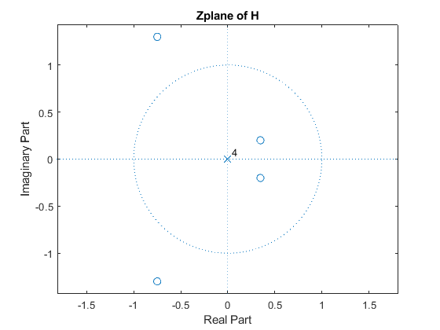 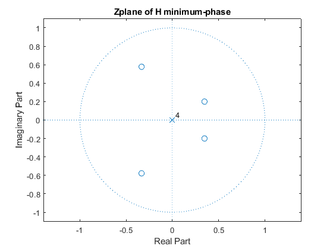 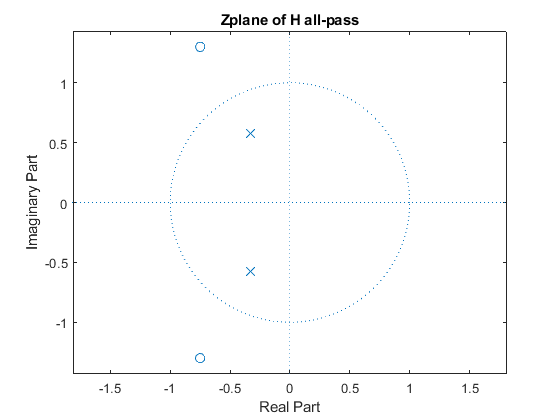 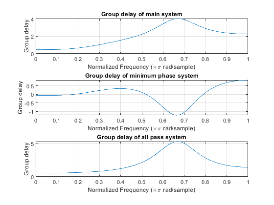 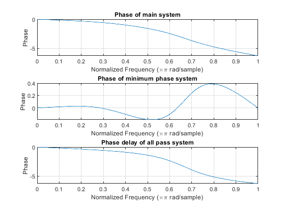 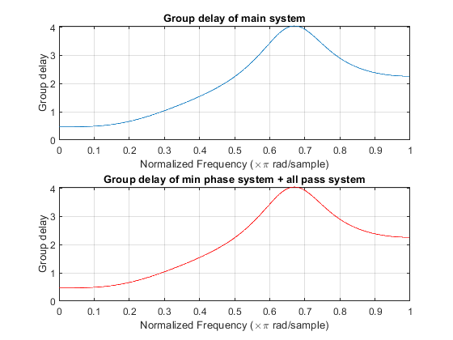 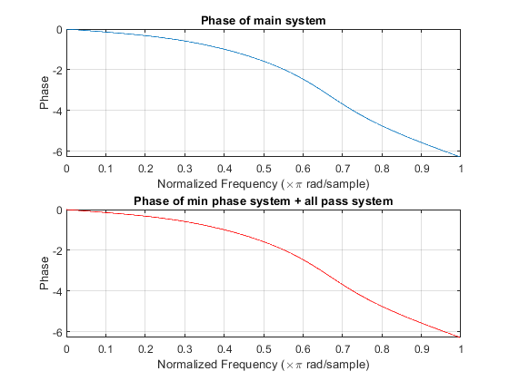
PART 2
%%%%%%%%%%%%%%%%%%%%%%%%% a %%%%%%%%%%%%%%%%%%%%%%%%%%%%%%% % a)FIR GLP type 3 System b31 = conv([1,1],[1,-1]); b32 = conv([1, -(2/3)*exp(1j*2*pi/3)], [1, -(2/3)*exp(-1j*2*pi/3)]); b33 = conv([1, -(2.5)*exp(1j*pi/6)], [1, -(2.5)*exp(-1j*pi/6)]); H3 = conv(conv(b31,b32),conv(b33,H)); figure(8); zplane(H3,1); title('Zeros and poles of FIR GLP type 3 system'); figure(9); freqz(H3,1,0:pi/100:2*pi); title('FIR GLP type 3 system frequency domain'); % Min-Max-Uc Decomposition z1=0.4*exp(pi*1j/6); z2=1.5*exp(pi*1j*2/3); z3=conj(z1); z4=conj(z2); z5=1; p1=0.99 z6=-1; p2=-0.99 z7=0.4^(-1)*exp(pi*1i/6); z8=0.4^(-1)*exp(-pi*1j/6); z9=1.5^(-1)*exp(pi*1j*2/3); z10=1.5^(-1)*exp(-pi*1j*2/3); a_Hc = poly([z1,z1,z3,z3,z5,z6,z9,z9,z10,z10]); % Hm = HC*H(Z) => |Hm|=1 b_Hm = poly([z1,z1,z3,z3,z9,z9,z10,z10,z5,z6,z2,z4,z7,z8] ); a_Hm = poly([z1,z1,z3,z3,p1,p2,z9,z9,z10,z10,z1,z3,z9,z10]); figure(10); zplane(1,a_Hc); title('Compensator system'); figure(11); freqz(1,a_Hc,0:pi/100:2*pi); title('Compensator system frequency domain'); figure(12); zplane(b_Hm,a_Hm); title('Hc.H(Z)'); figure(12); freqz(b_Hm,a_Hm,0:pi/100:2*pi); title('Hc.H(Z) frequency domain');
p1 =
0.9900
p2 =
-0.9900
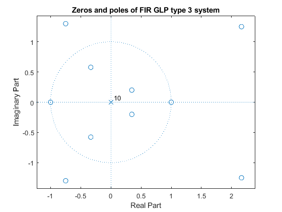 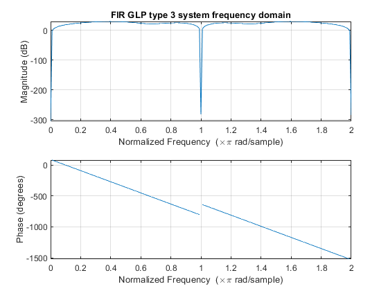 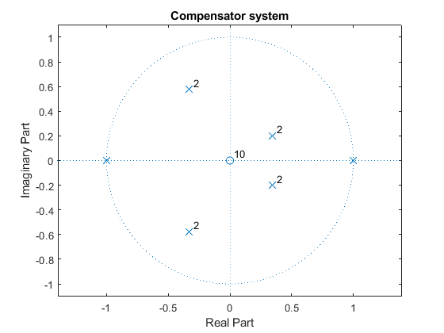 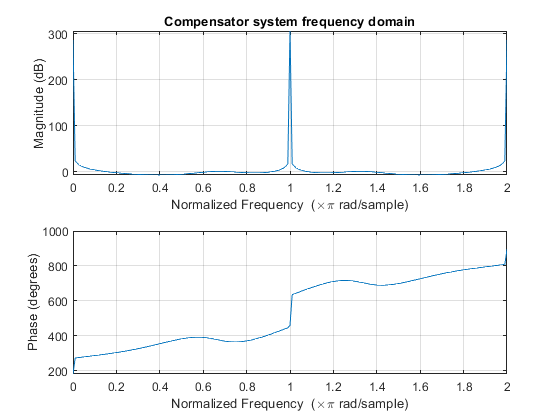 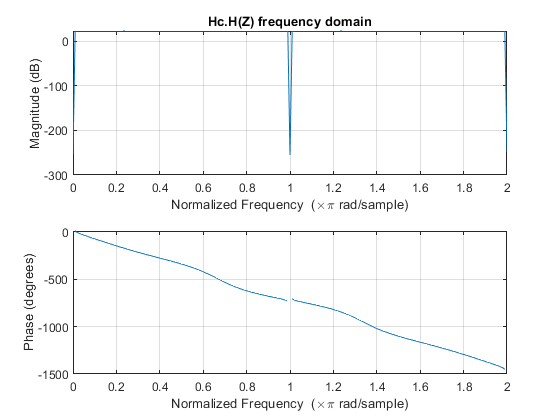